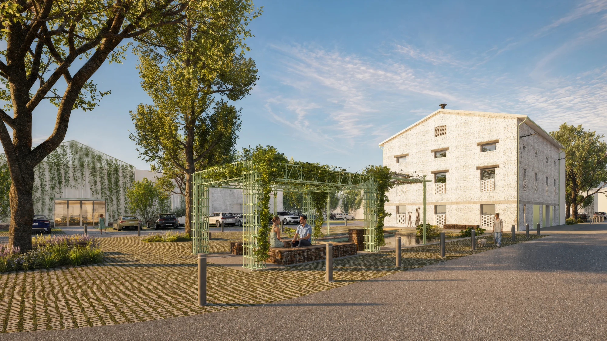

Architektura v měřítku místa
Tradiční formy hospodářských staveb, modulární konstrukce a zelené fasády.

Smartzóna YEZEDO · Kostice u Břeclavi · u dálnice D2
Obec Kostice připravila území, sítě a koncepci nové zóny pro lehkou výrobu a služby: 6 hal o celkové ploše 10 176 m², inovační centrum v sýpce BIQ a veřejný park. Hledáme strategického partnera, se kterým ji postavíme.
pro výrobu, sklady a služby
zastavěná plocha, orientačně
dokončeno a zkolaudováno
předpoklad do konce roku
první etapa: sýpka a haly
Příležitost ke společnému rozvoji
Hledáme kapitál, zkušenosti a odpovědnost. Strategického partnera pro rozvoj celého areálu i firmy pro konkrétní haly.
Obchodní model a odpovědnosti jsou předmětem jednání s obcí. Z bývalého zemědělského družstva v Kosticích tvoříme venkovský industriál pro 21. století: na dobré adrese u dálnice D2, s vlastní identitou a společným zázemím.
Koncepce
Budovy, voda, zeleň, energie a veřejný prostor se navzájem doplňují. Společná koncepce dává jednotlivým záměrům širší smysl.

Tradiční formy hospodářských staveb, modulární konstrukce a zelené fasády.
Propojený systém vsakování a retence, stín, pěší cesty a místa pro setkávání.
Komunitní energetická síť KES Kostice, místní zdroje, akumulace a řízení podle potřeb provozů.
Haly pro konkrétní provoz
Modulární haly se dají dělit na sekce, takže zónu mohou využít malé i střední firmy. Součástí může být kancelářské patro i showroom.
Pracovní místo nebo dílna
Sdílené dílny, coworking a kanceláře v sýpce BIQ.
Sýpka BIQ ↗Sekce haly, orientačně od 160 m²
Samostatné sekce šířky 9–15 m, které lze spojovat podle potřeby.
Sekce v halách ↗Celá hala, 648 až 4 488 m²
Hala navržená podle provozu, s kancelářemi ve 2. patře.
Development ↗| Hala | Rozměry | Plocha | Sekce | Detail |
|---|---|---|---|---|
| SO03 | 54 × 24 m | 1 296 m² | 5 | Detail ↗ |
| SO04 | 66 × 24 m | 1 584 m² | 5 | Detail ↗ |
| SO05 | 36 × 18 m | 648 m² | 3 | Detail ↗ |
| SO06 | 68 × 66 m | 4 488 m² | podle záměru | Detail ↗ |
| SO07 | 66 × 18 m | 1 188 m² | 2 | Detail ↗ |
| SO09 | 54 × 18 m | 972 m² | 5 | Detail ↗ |

Sýpka BIQ / srdce areálu
Jediná původní stavba bývalého JZD, která zůstane. Living Lab s dílnami, kavárnou, coworkingem, digitálním velínem obce a multifunkčním sálem. Dává zóně identitu a život i mimo pracovní dobu.
Sýpka BIQHarmonogram
Kdo za projektem stojí
Obec pod vedením starosty Mgr. Libora Balgy vzala budoucnost bývalého zemědělského areálu do vlastních rukou. Architektonickou a ideovou koncepci garantuje Atelier Dohnalovi.


Od záměru k dalšímu kroku
Obor, prostorové potřeby a předpokládaný rozsah.
Provoz, dokumentace a technické návaznosti.
Obchodní model, odpovědnosti a další postup.
Libor Balga, starosta obce Kostice
+420 725 111 277 · starosta@kostice.cz